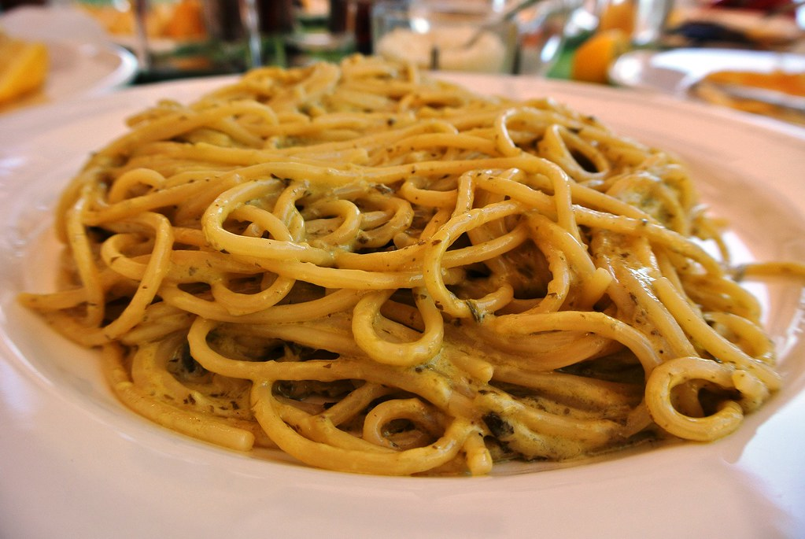

Spaghetti Aglio e Olio

"Spaghetti aglio e olio" by Vassilis Online is licensed under CC BY-SA 2.0 

 .
.
Description
This simple spaghetti dish is made by tossing noodles in olive oil, garlic, and a little pasta water -- forming a creamy, garlicky sauce in a snap.
Ingredients
- 1lb dried spaghetti
- 1/2 cup extra virgin olive oil
- 4 medium garlic cloves, thinly sliced
- Red pepper flakes(optional)
- Kosher salt
- Minced parsley (optional)
Steps
- Cook pasta until almost al dente, roughly 1 minute less than the package directions. Reserve cooking water.
- Saute garlic in a large skillet with 6 tbsp oil. Add red pepper flakes. Cook about 5 minutes, until garlic is barely golden.
- Add pasta to skillet with 1/2 cup cooking water. Increase heat to high and cook, agitating pasta, until a sauce forms. Remove from heat. Add remaining 2 tbsp oil and parsley. Season and serve.